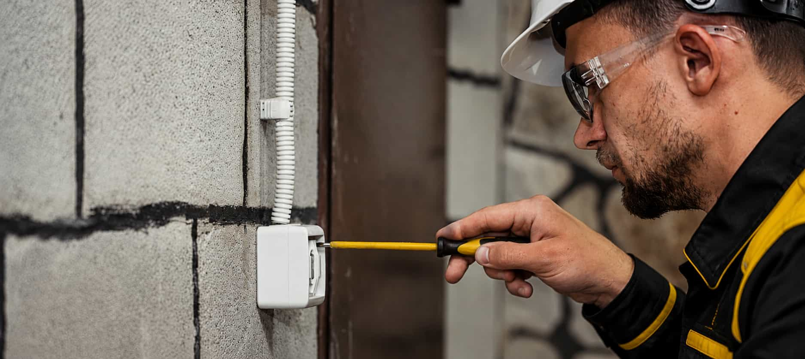

Add rooms, wiring concerns, ZIP code, access notes, and timing.
⚡ Wiring route matching
Compare local provider options for wiring and rewiring projects.
Fluxly helps homeowners prepare wiring and rewiring details before comparing independent local electrical provider options. Share the rooms, access areas, circuit concerns, timing, and project notes so the request is easier to route.
🔌 Circuit routes
💡 Room updates
⚡ Older wiring concerns
📋 Scope clarity
🛡️ Verify before hiring
When this path fits
Wiring requests often start when the home layout, circuits, or electrical needs change.
Homeowners may explore this category when remodeling rooms, adding outlets, updating old wiring, planning new circuits, improving lighting controls, or addressing concerns with overloaded or unreliable electrical paths. A provider may need to understand access, wall conditions, distance from the panel, materials, and permit requirements.
Fluxly does not inspect wiring or perform rewiring work. It helps homeowners organize request details so independent providers can discuss the scope more clearly.

Route details matter
Share rooms, access points, panel distance, photos, and what changes you want
providers to review.
Provider evaluation
Wiring quotes can vary because the route, access, and finish work may vary.
Wiring and rewiring conversations can involve wall access, attic or crawlspace access, circuit length, panel capacity, permit needs, fixture or outlet placement, cleanup, patching expectations, and warranty terms. Homeowners should compare the full scope and verify provider credentials before hiring.
Project details
Add clear wiring notes before requesting provider options.
Good request details help providers understand the wiring route, access conditions, and project expectations before discussing quotes.
🏠
Rooms and areas
List the rooms, exterior areas, garage, basement, attic, or addition connected to the request.
🔌
Outlets, switches, or circuits
Mention new outlets, dedicated circuits, lighting controls, appliance circuits, or panel connections.
📸
Photos and access
Add photos of the panel, rooms, wall areas, attic or crawlspace access, and any visible wiring concerns.
📋
Scope questions
Ask about permits, inspection steps, patching, cleanup, materials, timing, and warranty terms.
Matching flow
How Fluxly routes wiring and rewiring requests.
Fluxly helps organize the request around wiring scope, access conditions, location, timing, and verification reminders. Independent providers discuss the work, quote terms, and project requirements directly with the homeowner.
Fluxly keeps the request focused on wiring and rewiring comparison.
Compare independent provider options when available in the area.
Confirm license, insurance, permits, scope, timing, and terms directly.
Questions
Wiring and rewiring matching FAQ.
Helpful answers about wiring requests and Fluxly’s independent provider matching model.

Start request
Prepare your wiring request before comparing providers.
Share rooms, access conditions, ZIP code, timing, wiring concerns, and project notes before comparing independent local electrical provider options.
Disclaimer: This site is a free service to assist homeowners in connecting with local service providers. All contractors/providers are independent and this site does not warrant or guarantee any work performed. It is the responsibility of the homeowner to verify that the hired contractor furnishes the necessary license and insurance required for the work being performed. All persons depicted in a photo or video are actors or models and not contractors listed on this site.